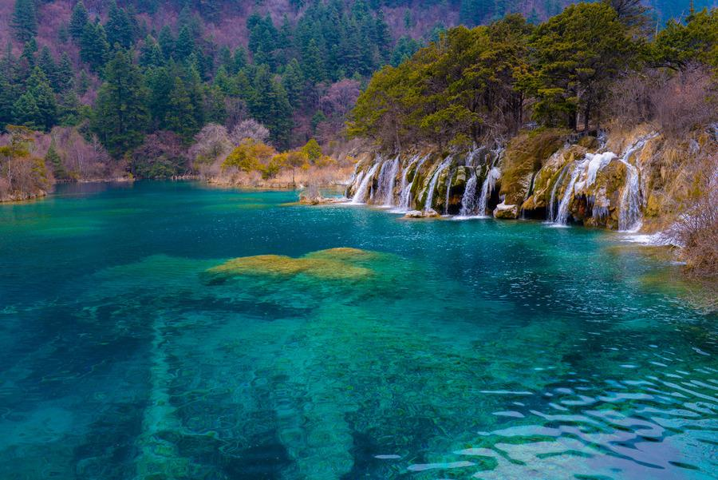
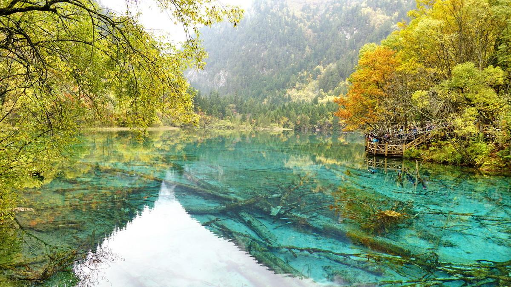
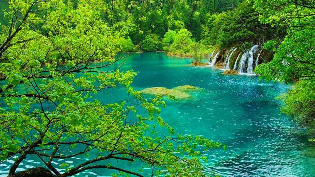
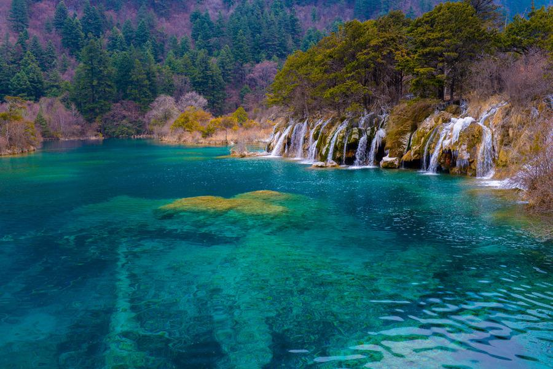
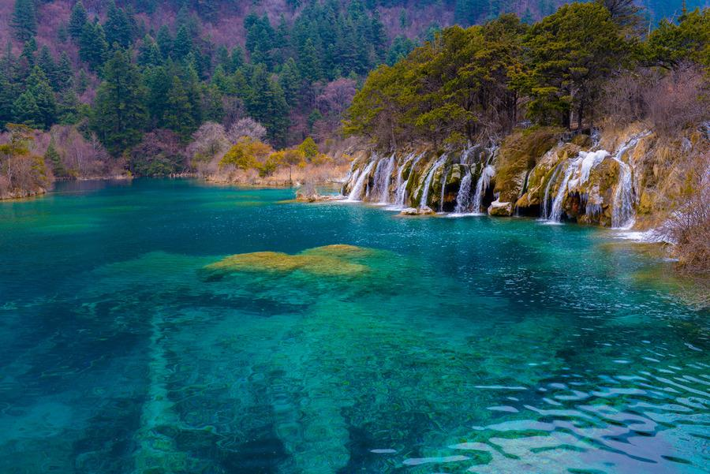
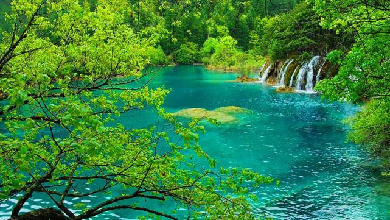
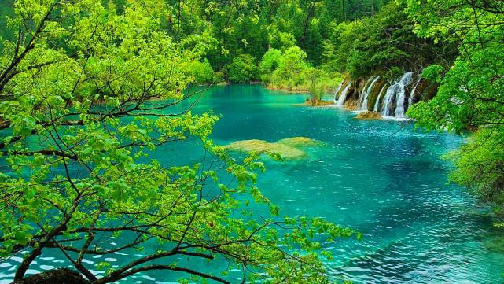

国家AAAA级旅游景区，国家级风景名胜区，中国旅游目的地四十佳，中国生物圈保护区，中国最美十大森林，最具特色中国十大风景名胜区，“绿色环球21”认证。 蜀南竹海位于四川南部的宜宾市境内，幅员面积120平方公里，核心景区45平方公里，共有八大主景区，两大序景区134处景点。由27条峻岭，500多座峰峦组成，景区内共有竹子400余种，7万余亩，楠竹枝叠根连，葱绿俊秀，浩瀚壮观。
蜀南竹海是世界上集中面积最大的天然竹林景区，独特的地理位置，造就了“云山竹海，天上人间”。
兴文石海世界地质公园的植被类型为亚热带次生性常绿针叶林，以楠竹、松、桫椤和山地草灌为典型，主要有菊科、酢浆草科、唇形科、蔷薇科、禾本科等植物，主要种类有苦(Artemisiacodonocephalavar.maireana)、黄花酢浆草(Oxalis corniculata)、艾(Artemisia argyi)、夏枯草(Prunella vulgaris)冷水花(Pilea notata)、毛茛(Ranunculus japonicus)一年蓬(Erigeron annuus)、商陆(Phytolacca acinosa)等.
兴文石海位于四川省宜宾市兴文县境内，处于四川盆地与云贵高原过渡地带，总面积约156平方公里，是世界地质公园、国家级风景名胜区。
螺髻•九十九里位于凉山州首府西昌市以南约45公里，是螺髻山的核心景区，最高峰海拔4359米，同年被中央电视台评价为世界第一的温泉，常年40度的温泉水从半山悬崖上飞泻而下，其中最高一个瀑布落差50米，螺髻•九十九里温泉瀑布由上百个大小不一的温泉瀑布形成一个宽达200余米的温泉瀑布群，十分壮观。
世界自然遗产、国家重点风景名胜区、国家AAAAA级旅游景区、国家级自然保护区、国家地质公园、世界生物圈保护区网络，是中国第一个以保护自然风景为主要目的的自然保护区。九寨沟国家级自然保护区主要保护对象是以大熊猫、金丝猴等珍稀动物及其自然生态环境。有74种国家保护珍稀植物，有18种国家保护动物，还有丰富的古生物化石、古冰川地貌。

 
如果您有任何疑问，可以联系我们


 


 
